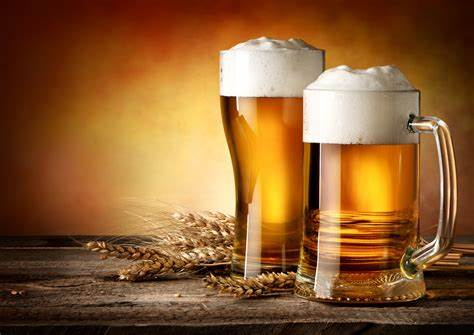
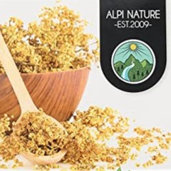
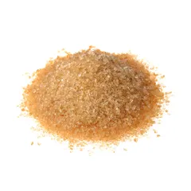
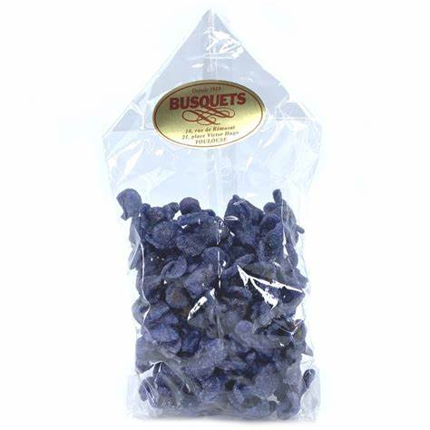
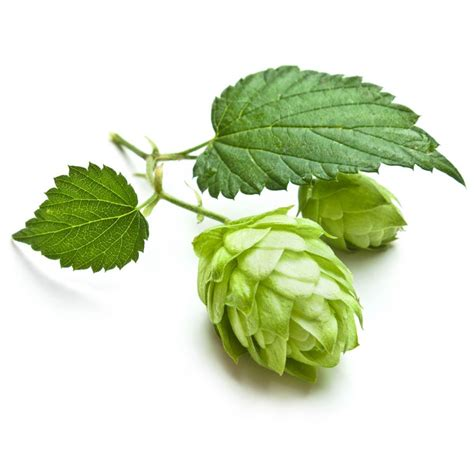

Bière Blonde

INGRÉDIENTS POUR 1 fût
 |
25cL de vinaigre |
 |
50 l d'eau |
|  | 25g de fleur de sureau |
|  | 2kg de cassonnade |
 |
6g de levure |
|  | 30g de fleur de violettes |
|  | 30g de fleur de houblon |
PRÉPARATION
|